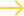

01
CRUISER
Si bien la mayoría de las tablas de nuestra línea son capaces de navegar, una tabla designada como crucero suele ser un poco más corta que una tabla corta estándar con una punta más corta, una forma más direccional y ruedas suaves. La mayoría de estas tablas se construyen a partir de moldes regulares de tablas cortas y son capaces de patinar en una variedad de terrenos, incluidos parques, pero también pueden cruzar un paseo marítimo.
